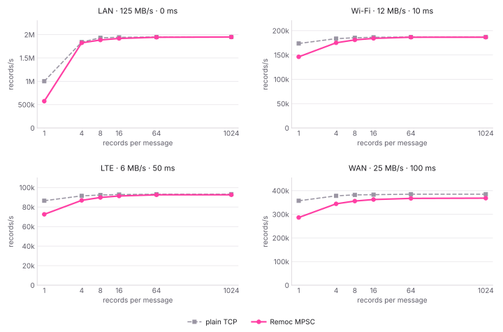
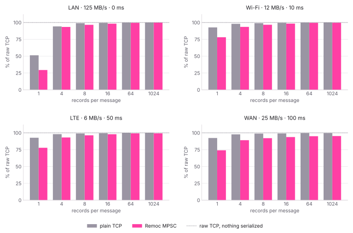

Benchmark setup
A sender pushes records as fast as it can for five seconds and a receiver reads them.
The same transfer runs twice: once over an rch::mpsc channel, and once
over a plain TCP connection that serializes the same records with the same codec and
frames them itself. The plain TCP implementation provides the reference for each
Remoc result.
#[derive(Clone, Serialize, Deserialize)]
struct Sample {
id: u64,
timestamp: u64,
source: String,
valid: bool,
value: f64,
}// A message is a batch of records.
let batch = vec![Sample::new(); records_per_message];
// Sent over rch::mpsc, or serialized
// into the socket by hand.
tx.send(batch).await?;
With Postbag, one record encodes to 64 bytes, so a batch of
1024 records is a 64 KiB message. Parallel transfer is configured with
with_parallel(4), allowing several messages to be encoded and decoded
concurrently to keep up with high-bandwidth links.
| Link | Bandwidth | Round-trip time |
|---|---|---|
| LAN | 125 MB/s | 0 ms |
| Wi-Fi | 12 MB/s | 10 ms |
| LTE | 6 MB/s | 50 ms |
| WAN | 25 MB/s | 100 ms |
Results generated with Remoc 0.20.0 compiled with Rust 1.97.1, on a 13th Gen Intel Core i9-13900K running Linux 7.1.
Records per second
Throughput depends on the number of records batched into each message. Each panel represents one emulated link and compares Remoc with the plain TCP implementation using the same serialization.

rch::mpsc channel and
plain TCP results converge. In these tests, the configured LTE and WAN
round-trip delays do not reduce throughput.
Throughput relative to plain TCP
The results are shown as a share of the raw TCP throughput available on each link, represented by the dotted line. The grey bars include serialization and framing; the pink bars additionally include Remoc's multiplexing, chunking and flow control.

Reproduce the results
The benchmark suite is part of the Remoc repository. It tests each configured
layer, codec and link, prints the results per link, and writes a JSON report from
which plot.py generates the charts.
$ cd bench/perf
$ cargo run --release -- --out results.json
$ ./plot.py results.json